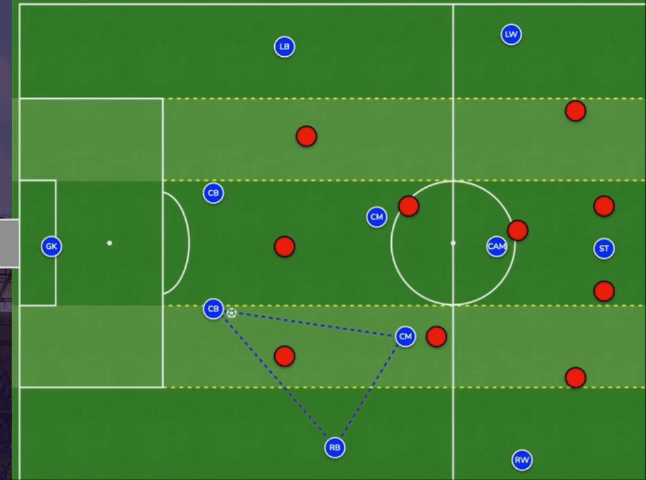

Ziel: Überwindung der gegnerischen Verteidigung Den freien Spieler finden, der im Raum steht und zum Tor blickt.
Wann? Der Verteidiger blockiert den direkten Passweg zum Angreifer. Kann auf dem gesamten Spielfeld in verschiedenen Spielphasen genutzt werden: im Spielaufbau, im Mittelfeld, im letzten Drittel.
Wie? Ein zweiter Spieler wird als Wandspieler eingesetzt Druck anziehen, um mehr Raum für den freien Spieler zu schaffen Ein indirekter Pass zum dritten Spieler schafft Raum und Zeit Schnelle Spielfortsetzung mit Blick auf das gegnerische Tor Erfolgsfaktoren: Positionierung der Spieler, Druck anziehen, Passwinkel finden, Körperhaltung, präzise, feste Pässe
In diesem Video sehen wir, wie das "Spiel über den Dritten" in einem realen Spiel funktioniert. Beachten Sie, wie der Ball in eine sichere Zone gespielt wird, bevor ein Angriff gestartet wird.
In diesem Video werden Trainingsübungen vorgestellt, die darauf abzielen, das "Spiel über den Dritten" zu üben. Dies hilft Spielern, die Bewegungen und Entscheidungen zu verinnerlichen, die notwendig sind, um dieses Konzept effektiv in einem Spiel umzusetzen.
Möchten Sie mehr über das "Spiel über den Dritten" erfahren? Hier sind einige zusätzliche Ressourcen: